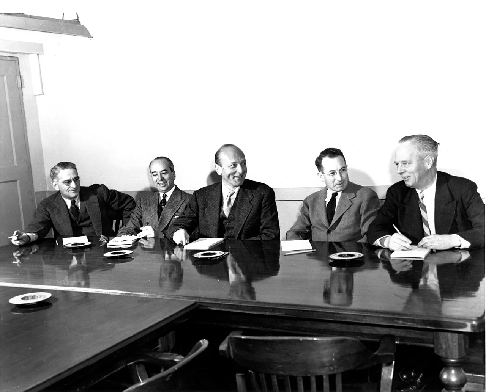
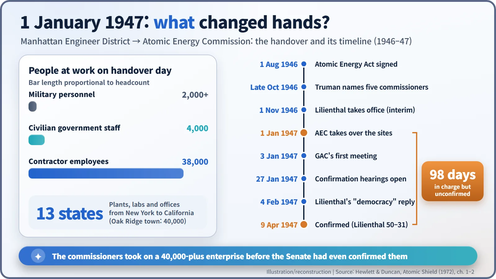
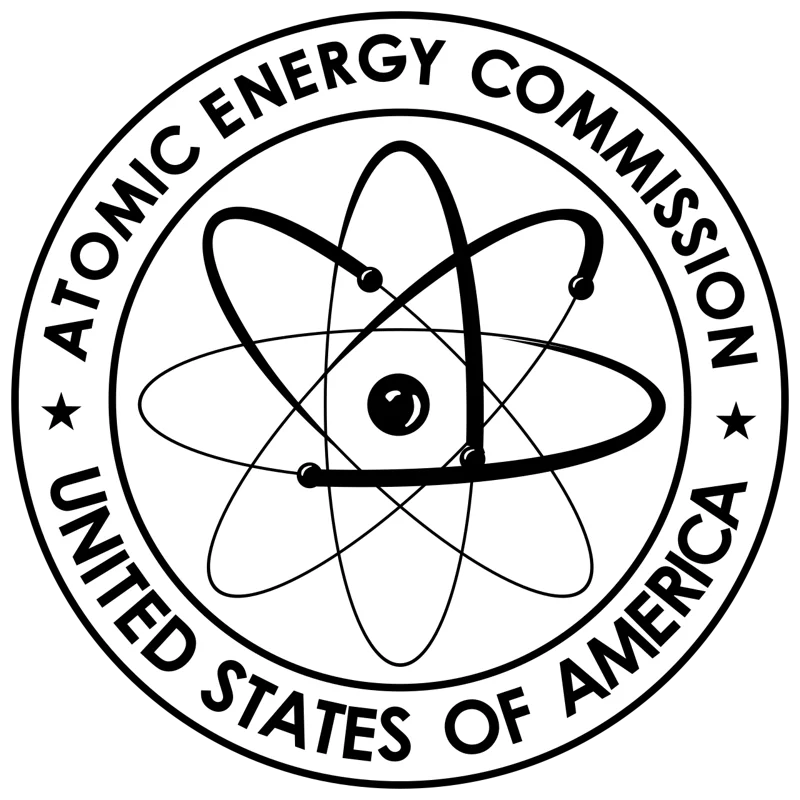
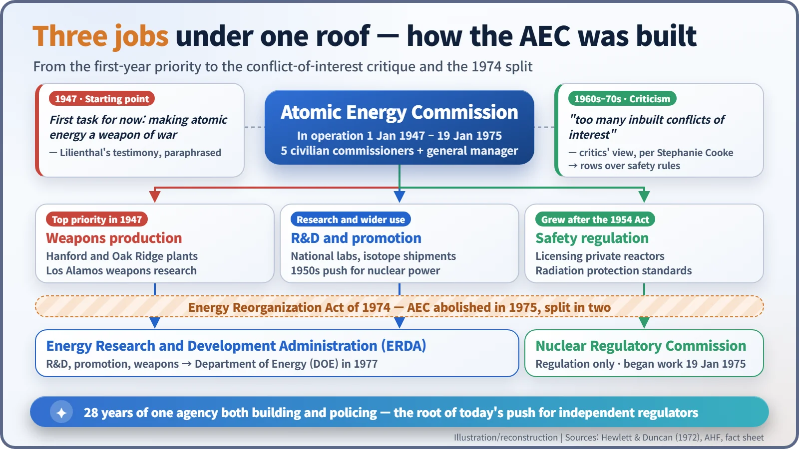

Nuclear History · 127
Running the Atomic Empire Before Anyone Approved Them — Birth of the U.S. Atomic Energy Commission
Five civilians, 44,000 workers in 13 states, a stockpile memo kept in Truman's safe, and the conflict of interest that split the agency in 1974.
On 1 January 1947 a commission of five civilians, chaired by David E. Lilienthal, took over the Manhattan Project's plants, laboratories and some 44,000 workers in 13 states, more than three months before the Senate confirmed them. The Atomic Energy Commission built bombs, promoted research and nuclear power, and later regulated reactor safety, a combination that ended in 1974 when Congress split it into separate regulatory and development agencies.
"Really a terrible responsibility"
On Monday 27 January 1947, in Hearing Room 312 of the Senate Office Building in Washington, flashbulbs popped as a tall, balding man in his late forties explained what he had taken on. It was "really a terrible responsibility," he said, "not only because of the great scope of powers vested, but because errors of judgment, serious errors of judgment, can mean missed opportunity for the people of this country—and even worse." His name was David E. Lilienthal (1899–1981), and he was the nominee to chair the new Atomic Energy Commission (AEC). There was one odd detail. He had already been running the agency for almost four weeks. [1]
From a general's desk to five civilians at a table
The Atomic Energy Act, signed on 1 August 1946, took the wartime Manhattan Project away from the Army and gave it to a commission of five civilians. President Harry Truman chose the five in late October 1946. Congress was in recess, so they took office on interim appointments, without Senate confirmation. [2] [3]
The line-up is revealing. Lilienthal was a lawyer who had run the Tennessee Valley Authority (TVA), the giant public power and river-development agency. Robert F. Bacher was a physicist from Los Alamos. Lewis L. Strauss was a Wall Street investment banker who had left the Navy as a rear admiral. Sumner T. Pike was a businessman who had served on the Securities and Exchange Commission, and William W. Waymack was editor of the Des Moines Register and Tribune in Iowa. Only one of the five, Bacher, was a scientist. Atomic energy was being treated as a matter of public administration, not a private club for physicists. [1]

On 1 January 1947 the commissioners took over the whole household of General Leslie Groves's Manhattan Engineer District. It was spread across 13 states, from New York to California and from Washington State to Tennessee. On handover day it employed more than 2,000 military personnel, 4,000 civilian government staff and 38,000 contractor employees. Oak Ridge alone was a government-owned town of 40,000 people. Day-to-day operations fell to a 36-year-old general manager, Carroll L. Wilson. [1]

Opening the books
One of the first things the new owners needed to know was how many atomic bombs the country actually had. In early January Bacher was at Los Alamos inspecting the weapon stockpile, and a snowstorm held up his flight back east. Published historical research puts the US stockpile in mid-1947 at only about a dozen weapons. According to the AEC's official history, the Commission's memorandum to the President of 2 April 1947 carried "shocking news" about the stockpile. The numbers were so sensitive that they were left blank; Lilienthal supplied them aloud and they were added in ink. Truman locked the memo in his personal safe. The atomic monopolist's cupboard was barer than most people imagined. [1]
Watchers were built in from the start. A General Advisory Committee of nine scientists advised on policy, a Military Liaison Committee linked the Commission to the Army and Navy, and Congress created a Joint Committee on Atomic Energy to keep constant watch. The advisory committee held its first meeting on 3 January 1947. J. Robert Oppenheimer was nominated as its chairman in his absence: the same snowstorm had grounded his flight. [1]
Ninety-eight days of hearings
Confirmation was anything but smooth. The 1946 midterm elections had given the Republicans control of Congress for the first time since 1933, and Senator Kenneth McKellar of Tennessee, a veteran Democrat, carried an old grudge from Lilienthal's TVA years. He asked whether the birthplace of Lilienthal's parents was not now "under the domination of Russia," and finally pressed: "Your sympathies are very leftist, are they not?"
Around 4 February, Lilienthal answered without notes, with a short definition of democracy. He spoke of "a repugnance to anyone who would steal from a human being that which is most precious to him, his good name, by imputing things to him, by innuendo, or by insinuation." And he ended: "I deeply believe in the capacity of democracy to surmount any trials that may lie ahead provided only we practice it in our daily lives." The reply made the front pages the next morning. [1]
Opponents also argued that government monopoly threatened free enterprise. Even so, eight of the nine senators on the committee voted for confirmation. On the floor, Senator Arthur Vandenberg declared that "in the interests of national welfare and for the sake of a square deal, Mr. Lilienthal ought to be confirmed," and the galleries applauded. A motion to block the nominations failed 52 to 38, and on 9 April 1947 the Senate confirmed the commissioners. They had been running the agency for 98 days. [1]

When the builder is also the inspector
At first the AEC's job was clearly weapons. At his hearing, Lilienthal himself said that the Commission's primary responsibility for the moment was to make atomic energy a weapon of war. Research and wider uses grew over time, and when the Atomic Energy Act of 1954 allowed private companies to own reactors, the AEC found itself both promoting nuclear power and licensing and policing its safety. [2]

Imagine a football club whose manager also referees its matches. From the 1960s, critics argued that the AEC's rules on radiation protection and reactor safety were not strict enough; the writer Stephanie Cooke sums up their view that the agency had "too many inbuilt conflicts of interest." In 1974 the Energy Reorganization Act abolished the AEC. Regulation went to the Nuclear Regulatory Commission (NRC), which began work on 19 January 1975; research, promotion and weapons went to the Energy Research and Development Administration (ERDA), which became part of the new Department of Energy (DOE) in 1977. [2] [3]
The experiment of moving the keys from soldiers to civilians lasted about 28 years, and it ended with a lesson: the hand that builds and the hand that inspects should belong to different bodies. Whenever countries today debate how independent a nuclear regulator should be, the story starts at that table of five civilians who took charge of a 40,000-strong enterprise before the Senate had even approved them.